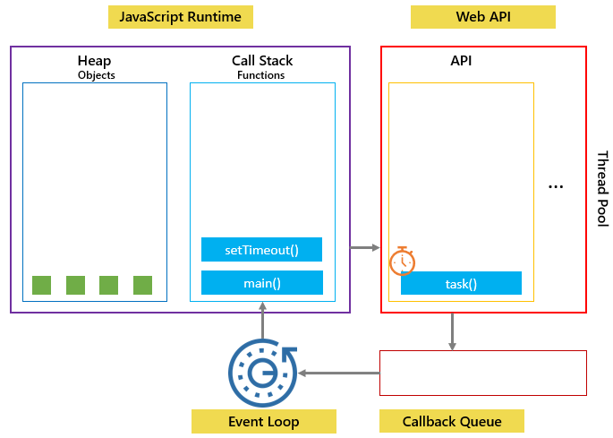

Frequency Ask Question


জাভাস্ক্রিপ্ট হলো একটি সিঙ্গেল থ্রেটেট প্রোগ্রামিং ল্যাঙ্গুয়েজ। যেখানে কোডগুলো লাইন বাই লাইন এক্সিকিউট হয়। আর কোডগুলো এক্সেকিউট হয় একটা নির্দিষ্ট স্টেপের মধ্যে দিয়ে। প্রথমে ব্রাউজার এর কাছে জাভাস্ক্রিপট কোডগুলো যায়। জাভাস্ক্রিপ্ট যখন প্রথম আসছিল তখন এটি ছিল ইন্টারপ্রেটার ল্যাঙ্গুয়েজ। কিন্তু একটা সমস্যা ছিল প্রসেস স্লো ছিল। কিন্তু সুবিধা হলো ইজি টু ডিবাগ ছিলো। তারপর এই স্লোনেস দূর করার জন্য কম্পাইলেশন আসলো। কম্পাইলেশন এর একটা অসুবিধা ছিল সহজে ডিবাগ করা যেত না। কিন্তু প্রসেস ফাস্ট ছিল। এই অসুবিধা গুলো দূর করার জন্য ইন্টারপ্রিটারের ইজ টু ডিবাগ এবং কম্পাইলেশন এর ফাস্ট প্রসেস দুইটি মিক্সার করে JIT(just-in-time) আসলো। এটির সাহায্যে পারফরম্যান্স অপটিমাইজ ওয়েতে কোডগুলোকে মেশিন কোডে পরিণত করে এবং আমরা তখন ডিসপ্লেতে তা দেখতে পায়।

জাভাস্ক্রিপ্ট ব্রাউজার এবং নোড এ রান করে।ব্রাউজার এর মধ্যে ইঞ্জিন রয়েছে এবং এটি জাভাস্ক্রিপ্ট কোডকে কম্পাইল করে মেশিন কোডে পরিণত করে। গুগল ক্রোম ব্রাউজার এর মধ্যে v8 ইঞ্জিন রয়েছে। এই ইঞ্জিনের মধ্যে দুইটি অংশ থাকে একটি হিপ আর অন্যটি হচ্ছে কল স্ট্যাক। হিপ মেমোরি ম্যানেজমেন্ট এর কাজ করে। কল স্ট্যাকে ফাংশন কল হয়। এক্সিকিউশন কনটেক্সটে প্রথমে কল স্ট্যাকে মেইন ফাংশন কল হয়। সর্বপ্রথম যে ফাংশন কল হয় তাকে কল স্ট্যাকে তুলে দেয় এবং শেষ হলে কল স্ট্যাক থেকে পপ আউট করে দেয়। জাভাস্ক্রিপ্ট কোড লাইন বাই লাইন এক্সিকিউট হয় যখন সে অ্যাসিনক্রোনাস কোন একটা ফাংশন দেখে তখন এই ফাংশন এর কাজ সে নিজে না করে তার অ্যাসিস্ট্যান্ট ওয়েব এপিআই কে দিয়ে দেয়।উদাহরণ হিসেবে অ্যাসিনক্রোনাস ফাংশন এর মধ্যে একটি হচ্ছে সেট টাইম আউট। এই এসিনক্রোনাস ফাংশন একটা নির্দিষ্ট সময় পর তার কাজ শেষ হলে কল ব্যাক কিউ এর কাছে চলে যায়। কল স্ট্যাক এবং কল ব্যাক কিউ এই দুইটার মধ্যে যোগাযোগ রাখে ইভেন্ট লুপ। কল স্ট্যাক যখন তার সমস্ত কাজ শেষ করে ফ্রী হয় তখন ইভেন্ট লুপ কল ব্যাক কিউ থেকে ফাংশন টা কে নিয়ে এসে কল স্ট্যাকে তুলে দেয়। মোটকথা ইভেন্ট লুপ কল স্ট্যাক এবং কলব্যাক কিউ এই দুটির মাধ্যম হিসেবে কাজ করে থাকে।

লোকাল স্টোরেজঃ
- লোকাল স্টোরেজের ডাটাগুলো এক্সপায়ার হয় না।
- ডিফারেন্স ট্যাবের জন্য নতুন করে লোকাল স্টোরেজ গঠিত হয় না।
- পেজ রিলোড করলেও ডাটাগুলো থাকে
সেশন স্টোরেজঃ
- সেশন স্টোরেজের ডাটা এক্সপায়ার হয়ে যায়।
- এক পেজ থেকে অন্য পেজে গেলে সেশন স্টোরেজের ডাটা ক্লিয়ার হয়ে যায়।
- প্রত্যেকটা ট্যাবের জন্য ইউনিক সেশন স্টোরেজ গঠিত হয়।